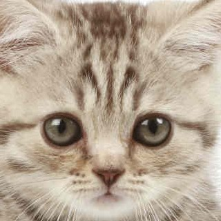
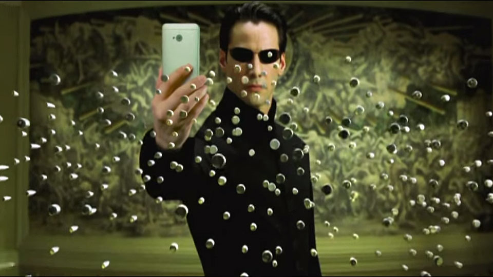
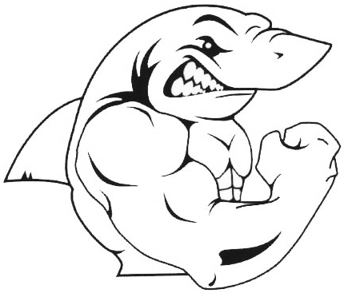
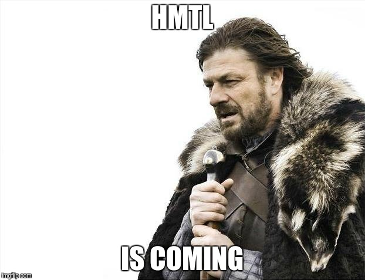

¿Quiénes somos?
Pablo Lammers Corral Edad: 20 años. Futuro Ingeniero de Computadores, lider cuestionado de Profesores con clase. Para mas informacion, envie una sugerencia con su foto y tema 'Conocer a Lammers'.
Francisco Burruezo ArandaEdad: 26 años. Cargando el paquete 'ingeniería de computadores'. Descubriendo las tecnologías web desde 2016. Contacto: frburrue@ucm.es
Manuel Pascual Edad: 20 años. Ingeniero de computadores se nace, no se hace. Mi gozo en el Pozo Murcia. Fui líder antes del motín. Mail de contacto: manupa01@ucm.es
Daniel del Pino Sánchez Edad: 21 años. Ingeniero en proceso de ingenieria, el músculo del grupo y delegado de clase. Zorrero-Talaverano de nacimiento, madridista de corazón. Mail contacto: danidelp@ucm.es
Sergio Tarancón Edad: 23 años. Ingeniero en fase Beta. Líder en las sombras de la sección HTML y diseñador de la interfaz web. Contacto: sertaran@ucm.es
Este es un proyecto perteneciente a la asignatura de Sistemas Web impartida al Grado en Ingeniería de Computadores. Curso 2015/2016